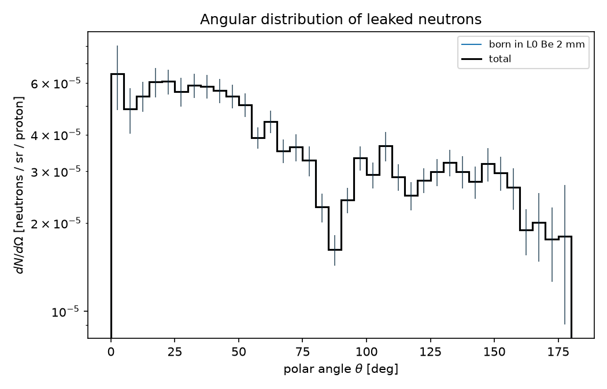
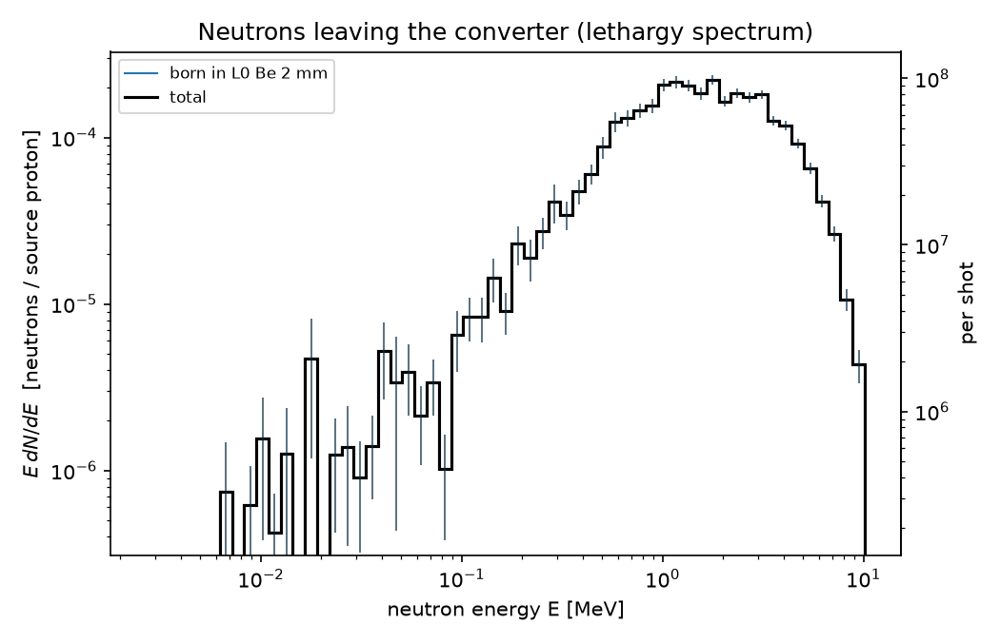
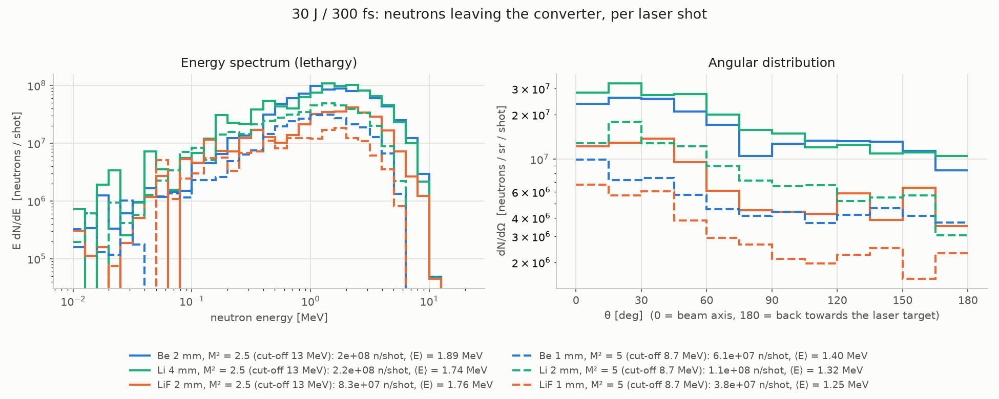
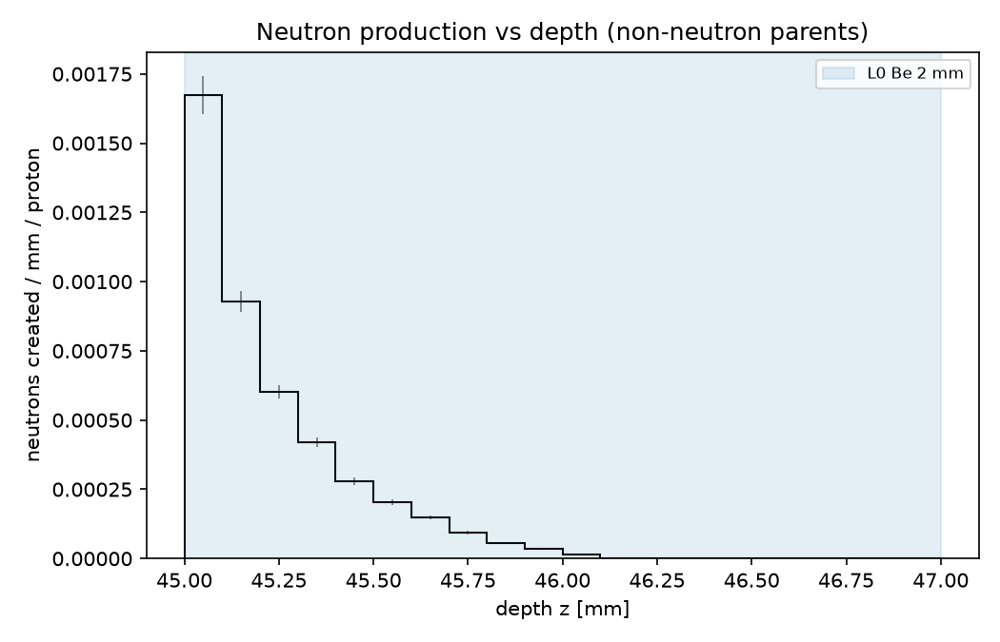
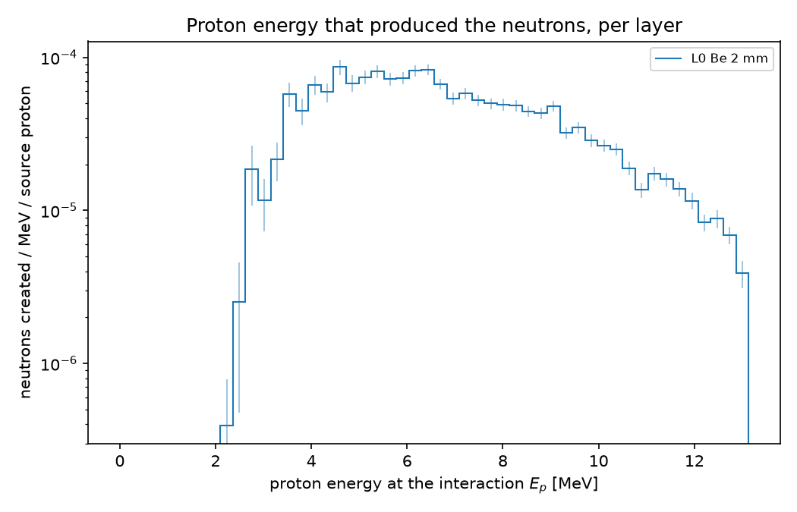
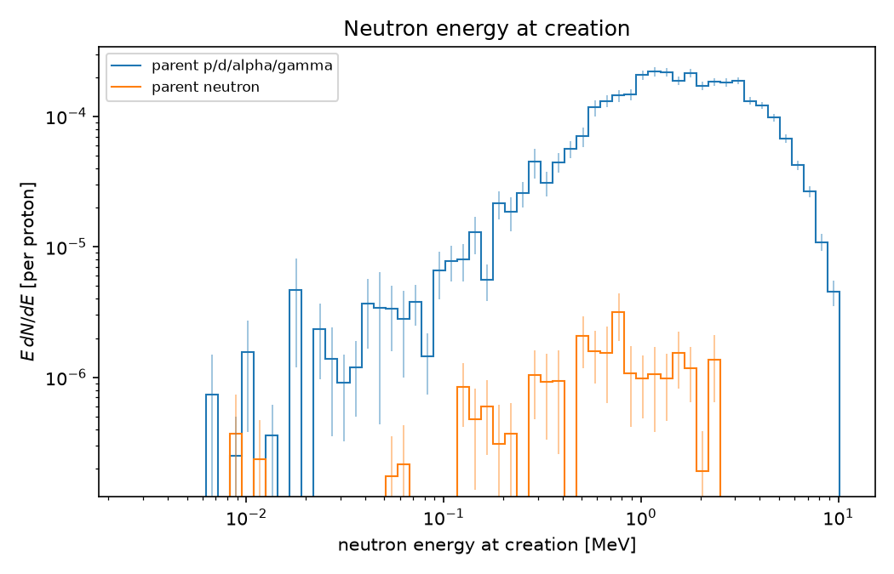

6126 שורות, 1341 נייטרונים
הריצה נגמרה, ובתיקייה output מחכה קובץ ROOT. בפרק הזה נעבור מהשורות שבתוכו למספר אחד עם שגיאה: כמה נייטרונים יוצאים מהממיר בירייה אחת של הלייזר.
בריצת ה-Be של ldns עברו \({3\times10^{6}}\) פרוטונים דרך הממיר. בטבלה leak שבקובץ הפלט יש 6126 שורות, שורה לכל נייטרון מסומלץ שיצא מהממיר, וסכום המשקלים (weights) שלהן הוא 1341. בירייה אחת של הלייזר יש \({4.42\times10^{11}}\) פרוטונים כאלה.
זה הנרמול של ldns, ושל כל ריצה עם משקלים: לפרוטון זה \(\sum w/N\), ולירייה זה לפרוטון כפול \(N_{\text{shot}}\), מספר הפרוטונים בירייה. את \(N\) ואת \(N_{\text{shot}}\) ldns כותב לקובץ הסיכום, ואת השורות לקובץ ה-ROOT. אלה השורות האחרונות של הסיכום שהריצה הדפיסה, מתוך E30J_M2p5_Be2.log:
events (source particles): 3000000 (sum of weights 2.99921e+06)
neutrons per source particle:
created by non-neutron parents: 4.459e-04 +- 9.033e-06
layer 0 (Be): 4.459e-04
leaving the converter : 4.470e-04 +- 9.048e-06
forward (p_z > 0) : 2.654e-04 +- 6.907e-06
source particles per shot: 4.416e+11
neutrons per SHOT leaving: 1.974e+08 +- 3.995e+06
forward : 1.172e+08 +- 3.050e+06
השורה neutrons per SHOT leaving היא בדיוק \(\sum w/N\times N_{\text{shot}}\), עם עוד ספרות. בסעיפים הבאים נראה מאיפה באות השורות, כמה מקום הן תופסות, איך הופכים אותן לגרף, ואיך יודעים כמה המספר שווה.
טבלה, עמודה, שורה
את קובץ ה-ROOT כותב G4AnalysisManager, הכלי של Geant4 לפלט. הוא כותב היסטוגרמות (histograms) וטבלאות (ntuples). טבלה היא מה שהשם אומר: עמודות (columns) עם שם וסוג, ושורה (row) לכל דבר שקרה. בטבלה leak של ldns הדבר הוא נייטרון שיוצא מהממיר.
בסימולציה ריצת צעצוע של 240 אירועים על ארבעה הליכים (threads), כמו ש-ldns רץ בדרך כלל. כל הליך מריץ אירועים שלמים, ממלא שורות משלו, ומעביר אותן הלאה בקבוצות קטנות.
אלה השורות בבנאי של RunAction, בקובץ src/RunAction.cc, שמכינות את הפלט:
auto am = G4AnalysisManager::Instance();
am->SetDefaultFileType("root");
am->SetVerboseLevel(0);
am->SetNtupleMerging(true); // one output file for all threads
am->SetFileName("output/ldns"); // override in macro: /analysis/setFileName
סוג הקובץ הוא root, וכל ההליכים נכתבים לאותו קובץ. השם output/ldns הוא ברירת מחדל, ומאקרו מחליף אותו בפקודה /analysis/setFileName, עם שם בלי סיומת: את .root Geant4 מוסיף לבד. אותו מנהל יודע לכתוב גם קובצי csv, hdf5 ו-xml; ldns בוחר ROOT.
ואלה העמודות של leak, מאותו קובץ. כל עמודה נוצרת עם שם וסוג: I למספר שלם, D למספר ממשי (double), ו-S למחרוזת:
am->CreateNtuple("leak", "neutrons leaving the converter");
am->CreateNtupleIColumn("evt");
am->CreateNtupleDColumn("E");
am->CreateNtupleDColumn("cosTheta");
am->CreateNtupleDColumn("phi"); // [rad]
am->CreateNtupleDColumn("x");
am->CreateNtupleDColumn("y");
am->CreateNtupleDColumn("z");
ואחריהן הכיוון, הזמן, השכבה שבה הנייטרון נולד, התהליך שיצר אותו והמשקל:
am->CreateNtupleDColumn("dx");
am->CreateNtupleDColumn("dy");
am->CreateNtupleDColumn("dz");
am->CreateNtupleDColumn("t");
am->CreateNtupleIColumn("birthLayer");
am->CreateNtupleSColumn("process");
am->CreateNtupleDColumn("w");
am->FinishNtuple();
שורה נכתבת פעם אחת לכל נייטרון שחוצה את הגבול של הממיר החוצה, באותו מקום בקוד שבו המשקל שלו נוסף לספירה של הסיכום. היחידות הן של Geant4: E ב-MeV, x, y, z ב-mm, ו-t ב-ns. cosTheta הוא הקוסינוס של הזווית בין כיוון היציאה לציר הקורה, ו-w הוא המשקל.
טבלה היא כמו גיליון אלקטרוני: לכל עמודה כותרת וסוג קבוע, וכל שורה היא מקרה אחד. קובץ הפלט של ldns הוא חוברת של כמה גיליונות: leak, residual, birth, reaction ו-primary.
כמה מקום זה תופס
ldns לא כותב תמיד את כל הטבלאות. הפקודה /ldns/out/level קובעת רמה: ברמה 0 רק הסיכום, ברמה 1 נוספות leak ו-residual, וברמה 2 גם birth, reaction ו-primary. ריצת ה-Be רצה ברמה 2. אלה ארבע השורות האחרונות של המאקרו שלה, E30J_M2p5_Be2.mac:
/ldns/out/level 2 /analysis/setFileName output/E30J_M2p5_Be2 /run/printProgress 500000 /run/beamOn 3000000
בטבלה primary יש שורה לכל פרוטון שנורה, כפי שנורה. בשאר הטבלאות יש שורה רק כשקורה משהו: נייטרון נולד, פרוטון עובר תגובה, נייטרון יוצא. בסימולציה הערכה של גודל הקובץ, בר לכל חלק.
ההערכה היא כ-48 בייט לאירוע ברמה 2: ריצה של \({3\times10^{6}}\) אירועים כותבת כ-144 MB, ו-\(10^{8}\) אירועים כבר כ-4.8 GB. זו הערכה גבוהה בכוונה: Geant4 דוחס (compression) את קובץ ה-ROOT כברירת מחדל, ולכן הקובץ בדיסק יוצא קטן ממנה. ברמה 1 אותה ריצה תופסת כ-1 MB, וברמה 0 אין טבלאות בכלל, וזה מה ש-ldns מציע לסריקות.
primary היא כמו רשימת נוכחות: שורה לכל מי שהגיע, גם אם לא עשה כלום. leak היא רשימת הזוכים בהגרלה: קצרה, ובה כל העניין.
משורות לספקטרום
השורות הן רשימה. כדי לראות ספקטרום או התפלגות זוויתית ממיינים אותן לבינים (bins) של היסטוגרמה, ומוסיפים לכל בין את המשקל של כל שורה שנפלה בו. ואז צריך להחליט מה בדיוק מציירים.
נתחיל בזווית. \(\theta\) היא הזווית בין כיוון היציאה של הנייטרון לציר הקורה, ו-cosTheta בטבלה הוא \(\cos\theta\). בסימולציה נייטרונים של צעצוע שיוצאים באופן איזוטרופי, כלומר באותו סיכוי לכל כיוון, ממוינים לבינים של \(15^\circ\).
החלוקה הנכונה היא בזווית המרחבית (solid angle) של כל בין, \(\Delta\Omega = 2\pi\,\Delta\cos\theta\) סטרדיאן (sr). כך מקבלים נייטרונים לסטרדיאן, הגודל שגלאי בכיוון מסוים רואה:
החלוקה ב-\(N\) נותנת לפרוטון, ועוד כפל ב-\(N_{\text{shot}}\) נותן לירייה. כך נראה הגרף האמיתי של ריצת ה-Be, מהסקריפט ldns_analysis.py של הפרויקט:

2_angular: נייטרונים לסטרדיאן לפרוטון, מול הזווית לציר הקורה. קדימה, בזוויות קטנות, יש יותר לסטרדיאן מאשר אחורה, אבל זו לא אלומה: בסך הכול 59% יוצאים קדימה. השקע ליד \(90^\circ\) בא כנראה מנייטרונים שיוצאים כמעט במקביל לפני הדיסקה ועוברים בה דרך ארוכה.עם האנרגיה יש עוד בחירה. ספקטרום של נייטרונים משתרע על כמה סדרי גודל, ולכן מציירים אותו על ציר אנרגיה לוגריתמי. על ציר כזה מציירים \(E\,dN/dE\), ולא \(dN/dE\):
על ציר לוגריתמי הרוחב של בין הוא \(\Delta(\ln E)\), ולכן השטח של עמודה הוא \(E\,dN/dE\cdot\Delta(\ln E) = \Delta N\). שטחים שווים הם מספרים שווים של נייטרונים, וזה מה שהעין קוראת בגרף. לגרף הזה קוראים ספקטרום לתרגיה (lethargy), וכך נראה הספקטרום של ריצת ה-Be:

1_leak_spectrum: ספקטרום הלתרגיה של הנייטרונים היוצאים, לפרוטון (ציר שמאלי) ולירייה (ציר ימני). רוב השטח מעל 1 MeV: שם 67% מהנייטרונים, והאנרגיה הממוצעת היא 1.89 MeV. מתחת ל-0.1 MeV יש מעט שורות, ולכן העמודות קופצות ופסי השגיאה ארוכים.ציר לוגריתמי הוא כמו מפה שבה כל פי 10 מקבל אותו רוחב. אם רוצים שגודל של כתם על המפה יגיד כמה אנשים גרים בו, צריך לצייר צפיפות לכל רוחב כזה, ולא לכל קילומטר.
השגיאה של סכום משקלים
בפרק 1 ראינו שהשגיאה של ספירה של \(k\) אירועים היא \(\sqrt{k}\). בטבלה עם משקלים מפתה לקחת את מספר השורות, \(R\), ולהגיד שהשגיאה היחסית היא \(1/\sqrt{R}\). נבדוק: נריץ אותה ריצת צעצוע 200 פעמים, כל פעם עם זרע אחר, ונראה כמה זז סכום המשקלים.
בכל ריצה יש כ-1000 שורות, והמשקלים בצעצוע הם בין כ-0.03 לכ-5: בדגימה flat, כמו ב-ldns, פרוטון באנרגיה נמוכה שווה הרבה, ופרוטון באנרגיה גבוהה שווה מעט. הכלל \(1/\sqrt{R}\) נותן כאן כ-3.2%.
ldns מחשב את השגיאה בדרך שמכסה את זה ועוד דבר אחד. לכל אירוע \(i\) הוא סוכם את \(x_i\), סכום המשקלים של הנייטרונים שהאירוע הזה הוציא, ומחשב את הפיזור של \(x_i\) בין האירועים: זה ה-MeanErr מפרק 1. כך נכנס גם הריבוי (multiplicity): פרוטון אחד שמוציא שני נייטרונים נותן \(x_i = 2w\), שנכנס לשונות כגוש אחד, \(4w^2\), ולא כשני \(w^2\) נפרדים.
בריצת ה-Be השגיאה המודפסת היא \(\pm 27\) על סכום משקלים של 1341, כלומר 2.0%. הכלל של השורות היה נותן \(1/\sqrt{6126} = 1.3\%\), פחות ממה שהריצה באמת שווה. ומה היא שווה? \((1341/27)^2 \approx 2470\): כאילו ספרנו כ-2470 נייטרונים בלי משקלים.
ופסי השגיאה בגרפים של ldns_analysis.py? בכל בין הם \(\sqrt{\sum w^2}\), ומתעלמים מכך ששני נייטרונים מאותו פרוטון קשורים זה לזה. בגרף זה מספיק טוב; המספרים בסיכום וב-JSON משתמשים בשגיאה מהאירועים.
משקלים שונים הם כמו סקר שבו כמה משיבים שווים פי 20 מהאחרים. יש הרבה משיבים, אבל התשובה תלויה בעיקר במעטים הכבדים, ולכן הסקר פחות מדויק ממה שמספר המשיבים מבטיח.
לקרוא בפייתון, ולבדוק לפני שמאמינים
לא צריך ROOT כדי לקרוא את הקובץ: הספרייה uproot קוראת קובצי ROOT בפייתון ומחזירה מערכים של numpy. אלה שמונה השורות מהמדריך של הפרויקט, GUIDE_HE.md סעיף 9.4, בלי הערה אחת בעברית בסוף השורה הרביעית. הן קוראות ריצה אחרת, stageA_Pb16; בשביל ריצת ה-Be מחליפים רק את שמות הקבצים:
import json, uproot, numpy as np
f = uproot.open("output/stageA_Pb16.root")
js = json.load(open("output/stageA_Pb16_summary.json"))
shot = js["source"]["protons_per_shot"] / js["n_events"]
L = f["leak"].arrays(["E", "cosTheta", "w"], library="np")
print("neutrons/shot leaving:", L["w"].sum() * shot)
fwd = L["cosTheta"] > np.cos(np.radians(10))
print("n/sr/shot within 10 deg:", L["w"][fwd].sum() * shot / (2*np.pi*(1-np.cos(np.radians(10)))))
השורה הרביעית היא הנרמול מהפתיחה, \(N_{\text{shot}}/N\), משני שדות של קובץ ה-JSON. השורה השביעית בוחרת את הנייטרונים שיוצאים בתוך \(10^\circ\) מהציר, והאחרונה מחלקת בזווית המרחבית של הקונוס, \(2\pi(1-\cos 10^\circ)\).
קובץ ה-JSON שנכתב ליד קובץ ה-ROOT מחזיק את ההגדרות של הריצה ואת המספרים של הסיכום: n_events, output_level, source עם protons_per_shot, geometry, ו-per_proton ו-per_shot עם השגיאות. זו השורה האחרונה בו, בריצת ה-Be:
"per_shot": {"leak": 1.9738831e+08, "leak_err": 3995445.1, "leak_forward": 1.1721563e+08, "leak_forward_err": 3050309.5, "conversion": 1.9689105e+08, "conversion_err": 3988931.5}
לפני שמאמינים למספר, בודקים שהריצה הריצה את מה שהתכוונו. לשם כך יש בפרויקט את check_inputs.py, שצריך פלט ברמה 2 ובודק בין השאר את הפרוטונים שנורו, בטבלה primary. אחת הבדיקות שם נוגעת במשקלים. בסימולציה אותה ריצת צעצוע עם דגימה flat: למעלה המשקלים של הפרוטונים שנורו, ולמטה המשקלים של השורות ב-leak.
זו בדיקה אחת מרשימה. check_inputs.py בודק גם שקובץ הספקטרום זהה לפלט של HERMIONE, מחשב מחדש את מספר הפרוטונים לירייה ואת האנרגיה הממוצעת שלהם, משווה את הספקטרום המשוקלל של הפרוטונים שנורו לספקטרום המבוקש, ובודק שהכיוונים בתוך הקונוס ושהקונוס נכנס בממיר: רדיוס של 16.4 mm על דיסקה ברדיוס 22 mm. בריצת ה-Be כל הבדיקות עברו (PASS).
ועוד כמה בדיקות שכדאי לעשות לפני שמספר נכנס להצעה או למאמר:
- שני חשבונות, אותו מספר. הסכום בפייתון, \(\sum w\times N_{\text{shot}}/N\), צריך לצאת כמו
per_shotב-JSON עד העיגול, כי ldns מוסיף את אותו משקל גם לשורה וגם לסיכום. פער אומר שקראנו קובץ של ריצה אחרת. - הנתונים הגרעיניים. חתכי הפעולה ש-Geant4 משתמש בהם, מול קובצי הנתונים המוערכים של ⁷Li, ⁹Be ו-¹⁹F מתחת ל-20 MeV: יחס של כ-1.00 (פרק 4).
- מדידה. ממיר LiF בעובי 4 mm באפולון (Apollon): המדידה גבוהה פי 1.27 מ-ldns. לפי מחברי הניסוי הפער בא מהקלט, ספקטרום הפרוטונים שנמדד, וגם הסימולציה של המחברים עצמם נמוכה מהמדידה.
- השוואה. אותה ריצה ליד הממירים האחרים, באותם צירים ובאותו נרמול. ריצה שיוצאת דופן בלי סיבה פיזיקלית היא ריצה שצריך לבדוק.

compare_30J: ספקטרום הלתרגיה (משמאל) וההתפלגות הזוויתית (מימין) לירייה, לממירי Be, Li ו-LiF של הלייזר של 30 J, בשני ערכי M². הקו הכחול המלא הוא ריצת ה-Be 2 mm שלנו. כל העקומות עברו אותו נרמול, \(\sum w\) בכל בין כפול \(N_{\text{shot}}/N\), ולכן אפשר להשוות ביניהן ישירות. LiF נמוך יותר, כמו שמצפים מממיר שחלק מהגרעינים שלו הם ¹⁹F, עם סף של 4.2 MeV.חמשת הגרפים הסטנדרטיים של ldns_analysis.py הם 1_leak_spectrum ו-2_angular, שכבר ראינו בסעיף 4, ושלושה שצריכים רמה 2 כי הם קוראים את birth ו-reaction:

3_birth_depth: כמה נייטרונים נוצרים בכל עומק בממיר. כמעט כולם נוצרים במילימטר הראשון, כי פרוטון של 13 MeV נעצר ב-Be אחרי כ-1.3 mm. החלק האחורי של הדיסקה לא מייצר כלום: זנב ריק כזה אומר שעובי נוסף לא יעזור.
4_proton_energy_at_reaction: באיזו אנרגיה היה הפרוטון כשיצר נייטרון, בתחילת הצעד של התגובה, ולכן קצת גבוהה מהאמיתית. מתחת לסף של ⁹Be(p,n), 2.06 MeV, אין כלום, והחציון הוא 6.3 MeV. לפי הגרף הזה מתכננים את השכבות של הממיר.
5_birth_spectrum: הספקטרום של הנייטרונים ברגע הלידה, לפי ההורה: פרוטון (או דאוטרון, אלפא, גמא), או נייטרון, כמו בתגובת \((n,2n)\). העקומה של ההורה נייטרון נמוכה בהרבה: ב-2 mm של Be כמעט כל הנייטרונים באים ישר מהפרוטונים, 98.6% מ-protonInelastic.הנוסחאות שהרווחנו
כל מה שכאן כבר רץ על המסך. עכשיו רק נותנים לזה שמות, שורה לכל סמל.
נרמול
| סמל | משמעות | יחידה |
|---|---|---|
| \(N\) | מספר האירועים, כלומר הפרוטונים שנורו (n_events). | |
| \(w_j\) | המשקל של שורה \(j\) בטבלה: כמה נייטרונים אמיתיים הנייטרון המסומלץ הזה שווה. | |
| \(p\) | נייטרונים לפרוטון. | |
| \(N_{\text{shot}}\) | פרוטונים בירייה (protons_per_shot), מהספקטרום של HERMIONE. | |
| \(Y_{\text{shot}}\) | נייטרונים בירייה. |
מה הנוסחה לא אומרת: ש-\(R\) שורות הן \(R\) נייטרונים. גם לא ש-\(N_{\text{shot}}\) נכון: הוא קלט מהספקטרום של הפרוטונים, וכל טעות בו עוברת ישר לתוצאה.
ספקטרום וזווית
| סמל | משמעות | יחידה |
|---|---|---|
| \(\sum_{\text{bin}} w\) | סכום המשקלים של השורות שנפלו בבין. | |
| \(\Delta(\ln E)\) | הרוחב של בין על ציר לוגריתמי. בעשרה בינים לכל פי 10: \(\ln 10/10 = 0.230\). | |
| \(E\,dN/dE\) | ספקטרום לתרגיה: שטח שווה על ציר לוגריתמי הוא מספר שווה של נייטרונים. | |
| \(\theta\) | הזווית בין כיוון היציאה לציר הקורה. | ° |
| \(dN/d\Omega\) | נייטרונים לסטרדיאן: מה שגלאי בכיוון \(\theta\) רואה. | sr⁻¹ |
| \(f_{\text{fwd}}\) | החלק שיוצא קדימה, בחצי המרחב שאחרי הממיר. |
מה הנוסחאות לא אומרות: שהצורה לא תלויה בבינים. ספירה בבין היא צפיפות כפול רוחב, ולכן תמיד מחלקים ברוחב, ואומרים על הציר במה חילקנו.
שגיאה
| סמל | משמעות | יחידה |
|---|---|---|
| \(x_i\) | סכום המשקלים של הנייטרונים שאירוע \(i\) הוציא; אפס ברוב האירועים. | |
| \(\bar x\) | הממוצע של \(x_i\): זה \(p\). | |
| \(\sigma_p\) | שגיאת התקן של הממוצע (standard error of the mean), מהפיזור בין האירועים. | |
| \(R\) | מספר השורות. | |
| \(R_{\text{eff}}\) | כמה ספירות בלי משקלים שווה הטבלה. בלי ריבוי, \(\sigma_p/p \approx 1/\sqrt{R_{\text{eff}}}\). |
מה הנוסחה לא אומרת: שהשגיאה הסטטיסטית היא כל השגיאה. ה-2.0% של ריצת ה-Be הם רק ההגרלה; חתכי הפעולה, הספקטרום של הפרוטונים ו-\(N_{\text{shot}}\) מוסיפים משלהם.
ריצת ה-Be של ldns, מהקובץ אל המספר:
| אירועים | 3×10⁶ |
|---|---|
| שורות ב-leak | 6126 |
| סכום המשקלים | 1341 ± 27 |
| משקל ממוצע של שורה | 0.219 |
| נייטרונים לפרוטון | 4.47×10⁻⁴ ± 0.09×10⁻⁴ |
| פרוטונים בירייה | 4.42×10¹¹ |
| נייטרונים בירייה | 1.97×10⁸ ± 0.04×10⁸ |
| קדימה | 59 % |
| אנרגיה ממוצעת, מעל 1 MeV | 1.89 MeV, 67 % |
| רמה 2, הערכה לפני דחיסה | ≈ 48 B / event |
השגיאה על סכום המשקלים היא \({0.09\times10^{-4}}\cdot{3\times10^{6}} = 27\). המשקל הממוצע הוא \(1341/6126\).
מעבדת הניתוח
טבלת leak של צעצוע, עם המספרים של ריצת ה-Be כברירת מחדל: \({3\times10^{6}}\) אירועים, תפוקה של \({4.47\times10^{-4}}\) נייטרונים לפרוטון, וספקטרום מקסוול עם \(T = 1.26\) MeV, שנותן אנרגיה ממוצעת של 1.89 MeV. אפשר לשנות כל דבר ולראות מה זז. כמה דברים שכדאי לבדוק:
- להוריד את \(N\) ל-\(10^{5}\). פי כמה גדלה השגיאה היחסית, ומה קורה לזנב מתחת ל-0.1 MeV?
- על בינים לוגריתמיים, לעבור בין \(E\,dN/dE\) לבין "צפיפות". איפה השיא בכל אחד?
- לעבור לזווית ול"צפיפות": זה \(dN/d\Omega\). ומה מראה "בבין" באותם נייטרונים?
- לכבות את "לירייה". פי כמה קטנים המספרים על הציר?
אתגר: לנרמל נכון
שלושה שלבים, ובכל אחד מספרים אחרים: מסכום משקלים לנייטרונים בירייה, משורות ומשקל ממוצע, ובסוף לסטרדיאן בתוך קונוס. את התשובה כותבים כמספר עשרוני, ביחידות של החזקה של 10 שליד השדה.
בדיקה ראשונה שמצליחה שווה 3 נקודות, שנייה 2, ואחר כך 1. הכוכבים נקבעים מסכום הנקודות, והמספרים משתנים בכל סיבוב.
מלכודות
ארבע טעויות שקל לעשות דווקא כשהכול כבר רץ. עדיף ליפול בהן כאן, ולא אחרי שבוע של ריצות.
הלקח: בלי נקודות בשם, ובלי סיומת. בגלל זה הריצות של 30 J נקראות M2p5 ולא M2.5, וכשחסר קובץ ROOT, הדבר הראשון לחפש בלוג הוא is not supported.
הלקח: תמיד לחלק ברוחב הבין, ולכתוב על הציר מה מצויר, \(dN/dE\) או \(E\,dN/dE\). ldns_analysis.py מחלק ב-\(\Delta(\ln E)\), ולכן הספקטרום שלו הוא \(E\,dN/dE\).
תרגילים
חמישה חישובים שעושים עם קובץ פלט ביד, עם המספרים של ריצת ה-Be. כדאי לנסות לבד, ולפתוח רמז רק כשנתקעים.
בוחן
חמש שאלות על הפרק ושתיים לחזרה. הציון הטוב ביותר נשמר, ואפשר לנסות שוב כמה פעמים שרוצים.
כרטיס כיס
מהקובץ אל המספר
/ldns/out/level 0|1|2. ברמה 2 כ-48 בייט לאירוע, ורובם בטבלה primary./analysis/setFileName output/E30J_M2p5_Be2, בלי נקודה ובלי סיומת.uproot.open(...) לטבלאות, ו-_summary.json בשביל \(N\) ו-\(N_{\text{shot}}\).